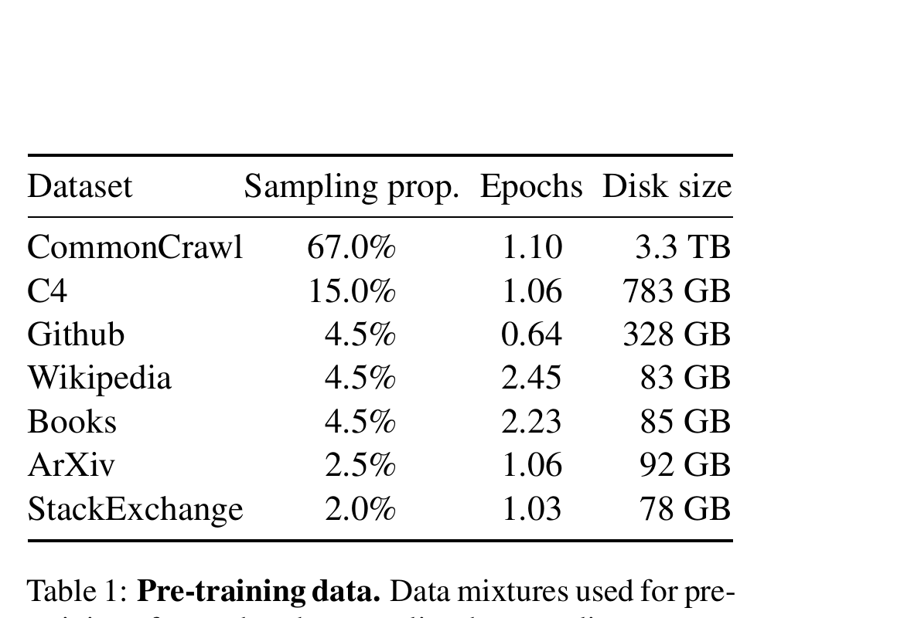
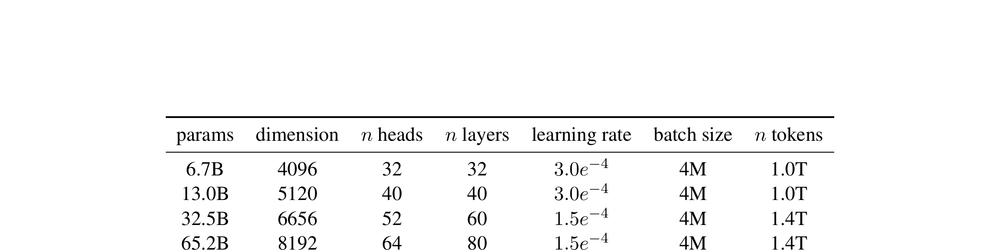
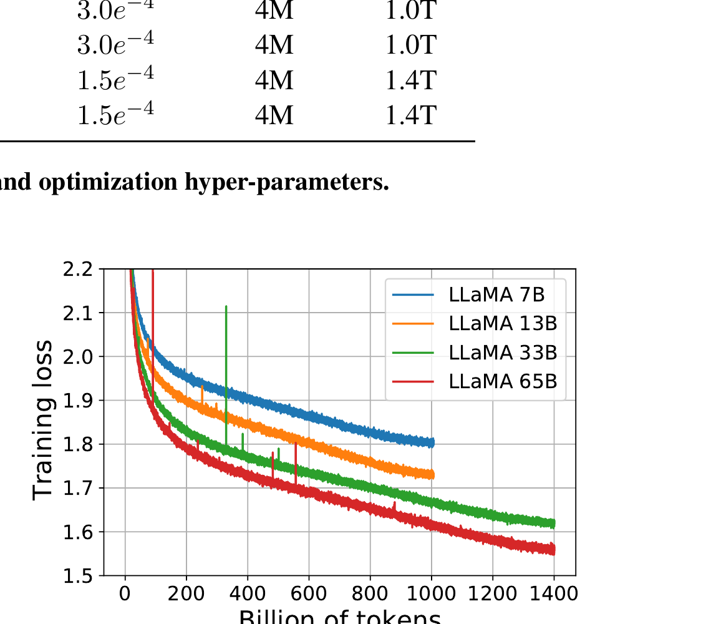
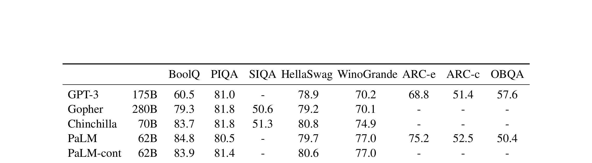
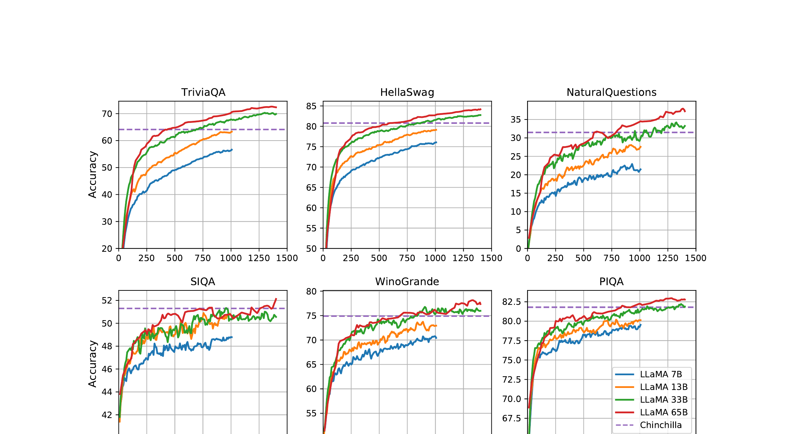
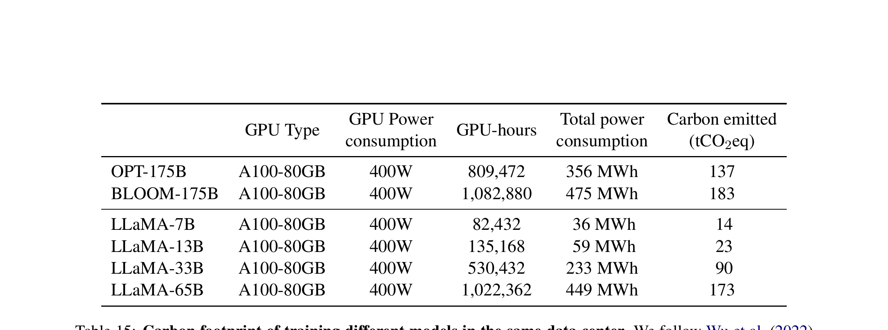

LLaMA（Large Language Model Meta AI）是 Meta AI 于 2023 年 2 月发布的一系列基础语言模型， 参数规模覆盖 7B、13B、33B 和 65B 四个量级。该论文的核心论点挑战了 "更大模型必然带来更好性能"的主流假设，证明了在更多数据上训练的较小模型 在推理时可以匹敌甚至超越更大的模型。
LLaMA 的关键区别在于：所有模型完全使用公开可用的数据进行训练， 使其与开源完全兼容。与依赖专有或未公开数据集的 GPT-3、PaLM 和 Chinchilla 不同， LLaMA 证明了无需专有数据即可达到最先进的性能水平。
本文针对缩放定律研究中的一个关键空白。Hoffmann 等人（2022）提出的 Chinchilla 缩放定律表明， 在给定训练计算预算下，最优策略是在更多数据上训练较小的模型。然而，该分析忽略了 推理预算——当大规模部署模型时，推理成本往往是主要开销。
训练数据集是多个公开可用来源的混合体，经 SentencePiece BPE 分词后总计约 1.4 万亿（1.4T）token。数据组成旨在覆盖多样化的领域：
| 数据集 | 采样比例 | 训练轮次 | 磁盘大小 | 说明 |
|---|---|---|---|---|
| English CommonCrawl | 67.0% | 1.10 | 3.3 TB | CCNet 管道处理的五次 CC 数据转储（2017-2020），含去重、语言识别和质量过滤 |
| C4 | 15.0% | 1.06 | 783 GB | 多样化预处理的 CommonCrawl 数据集，基于启发式的质量过滤 |
| Github | 4.5% | 0.64 | 328 GB | Apache、BSD、MIT 许可证的公开 GitHub 代码 |
| Wikipedia | 4.5% | 2.45 | 83 GB | 2022年6-8月的维基百科数据，覆盖20种语言 |
| Books | 4.5% | 2.23 | 85 GB | 古登堡计划和 ThePile 的 Books3，含去重处理 |
| ArXiv | 2.5% | 1.06 | 92 GB | 科学论文 LaTeX 文件，经预处理提升一致性 |
| Stack Exchange | 2.0% | 1.03 | 78 GB | 28个最大网站的高质量问答数据 |

LLaMA 基于 Transformer 架构（Vaswani et al., 2017），并融合了三项来自近期研究的关键改进：
不同于对每个 Transformer 子层的输出进行归一化，LLaMA 对输入使用 RMSNorm（Zhang & Sennrich, 2019）进行归一化。这提升了训练稳定性， 且计算效率优于 LayerNorm。
将 ReLU 非线性替换为 SwiGLU（Shazeer, 2020），这是一种门控线性单元变体， 能稳定提升性能。LLaMA 使用 2/3 × 4d 的维度，而非 PaLM 中使用的 4d。
完全移除绝对位置嵌入，改为在网络的每一层添加旋转位置编码（RoPE） （Su et al., 2021）。RoPE 通过旋转矩阵编码位置信息，能够更好地泛化到不同的序列长度。

所有模型均使用 AdamW 优化器训练，采用余弦学习率调度，2,000 步预热。 权重衰减为 0.1，梯度裁剪设为 1.0。关键的训练效率优化包括：

LLaMA 在涵盖多个领域的 20 个基准测试上进行了零样本和少样本评估，以下是各维度的重点结果：
在 8 个常识推理基准（BoolQ、PIQA、SIQA、HellaSwag、WinoGrande、ARC-e、ARC-c、OBQA）上， LLaMA-65B 在除 BoolQ 外的所有基准上超越了 Chinchilla-70B， 在大多数基准上也超过了 PaLM-540B。值得注意的是，LLaMA-13B 在多数基准上超越了 参数量为其 10 倍的 GPT-3。

在 NaturalQuestions 和 TriviaQA 上，LLaMA-65B 在零样本和少样本设置中均达到了 最先进水平。LLaMA-13B 在这些基准上与 GPT-3 和 Chinchilla 具有竞争力， 同时参数量小 5-10 倍，可在单块 V100 GPU 上运行。
在 GSM8k（中学数学）上，LLaMA-65B 超越了 Minerva-62B， 尽管它并未在数学数据上进行过微调。在 MATH（竞赛级数学）上，性能随规模提升， 但对所有模型来说仍具挑战性。
在 HumanEval 和 MBPP 上，LLaMA 在相似参数量下超越了 LaMDA 和 PaLM 等通用模型。 LLaMA-13B 在两个基准上均超越了 LaMDA-137B。 LLaMA-65B 在 HumanEval 上达到 pass@1 为 23.7%，在 MBPP 上为 37.7%。
LLaMA-65B 在 MMLU（5-shot）上得分 63.4%，落后于 Chinchilla-70B（67.5%）和 PaLM-540B（69.3%）几个百分点。这一差距可能源于 LLaMA 使用的书籍和学术论文数据量较少 （约 177GB vs 竞争模型的高达 2TB）。

论文进行了简短的指令微调实验（遵循 Chung et al., 2022），得到的 LLaMA-I（65B）在 MMLU 上达到了 68.9%， 超越了所有现有的中等规模指令微调模型，包括 Flan-PaLM-cont（62B，66.1%）。 这表明 LLaMA 作为微调基座具有强大的潜力。
论文在多个负责任 AI 基准上评估了 LLaMA-65B：
论文报告了训练所有 LLaMA 模型的能耗和碳排放。训练在 2048 块 A100-80GB GPU 上 进行，历时约 5 个月。总估计成本为 2,638 MWh 电力消耗和 1,015 吨 CO2 当量排放。

挑战了 Chinchilla 的训练最优缩放定律，转而优化推理预算。证明在远超推荐量的数据上 训练较小模型，部署成本更低、效果更好。
证明仅使用公开可用数据即可达到最先进的 LLM 性能，消除了专有数据集的壁垒， 实现了完全可复现性。
将三项经过验证的改进（RMSNorm 预归一化、SwiGLU 激活函数、旋转位置编码 RoPE） 融合成统一架构，使模型能超越参数量 10 倍的竞争对手。
采用高效注意力（xformers）、手动实现反向传播的梯度检查点、以及计算与通信重叠等技术， 最大化 GPU 利用率。
LLaMA-13B 可在单块 GPU 上运行，使具有竞争力的 LLM 研究不再局限于大型工业实验室， 对更广泛的研究社区开放。
LLaMA 证明了开放的、基于公开数据训练的语言模型可以与最优秀的专有模型竞争。 核心启示是：对于推理优化的缩放策略而言，训练数据量比模型大小更为重要。 通过发布从 7B 到 65B 参数的模型系列，作者旨在推动 LLM 研究的民主化， 加速这些模型的理解和改进，包括解决已知的毒性和偏见问题。
论文还指出，指令微调展现出令人期待的结果，为未来在对齐和专业化应用方面的工作开辟了道路。 LLaMA 的发布直接催生了 Alpaca、Vicuna 等一系列开源模型，极大推动了整个开源 LLM 生态系统的发展。